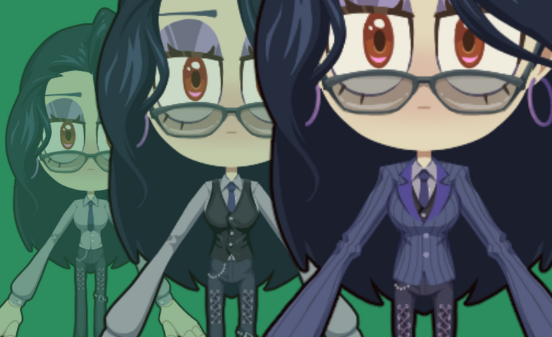
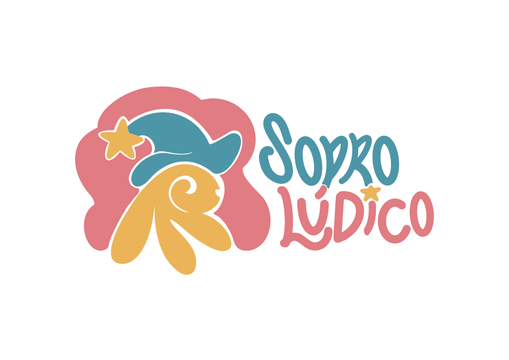

Em desenvolvimento
My Dress-Up Dungeon
Acompanhe o desenvolvimento e adicione nosso novo jogo à sua lista de desejos.


Acompanhe o desenvolvimento e adicione nosso novo jogo à sua lista de desejos.
